L15 - Aperture Distributions and Efficiency#
Aperture Distributions and Efficiency
Change the distribution and you change the pattern.
Lesson 15 · Antennas, Phased Arrays, and Radar Systems · Dr. Neil Rogers
Slides
Learning Objectives
- I can describe aperture distributions and calculate aperture efficiency for a given illumination.
From Measurement to Design
Lesson 11 measured patterns; Module 3 designs them.
The design variable is the aperture distribution, the field across the radiating opening.
Today we put numbers on the beamwidth, the sidelobe level, and the aperture efficiency.
In Lesson 11 you measured patterns: you turned an antenna in front of a source, recorded power against angle, and produced a main lobe, a set of sidelobes, and a beamwidth. Module 3 turns that around. From here on we decide where the lobes go, and the first design variable is the aperture distribution — the field across the opening that radiates. This lesson connects that distribution to the pattern it produces, puts numbers on the beamwidth and sidelobe level of the simplest case, and defines the efficiency that turns aperture area into gain. Those numbers carry straight into the array work that occupies the rest of the module.
Part 1: The Aperture as Source
An aperture is the opening a wave leaves through: a horn mouth, a reflector face, an array.
The far field depends only on \(E_a\), the tangential field across the opening.
Anything behind it matters only through the \(E_a\) it produces.
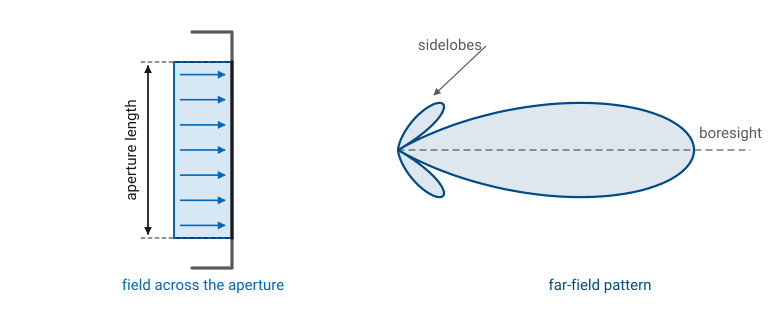
An aperture is the opening a wave leaves through: the mouth of a horn, the projected face of a reflector, the radiating surface of a patch, or the row of elements on the PHASER board. Whatever is behind it, the far field depends on only one thing — the tangential electric field across that opening, which is the aperture distribution \(E_a\). Change the distribution and you change the pattern. Leave the distribution alone and no change behind the aperture can alter the far field.
The Transform Relationship
Lesson 6 established the relationship. For a source confined to a region, the far field is the Fourier transform of the source distribution, and Module 1 carried that out for the line source. Take the one-dimensional aperture of length \(L\) lying along \(x\), radiating into the half-space in front of it, and measure the angle \(\theta\) from broadside (the aperture normal). The space factor is
with \(k = 2\pi/\lambda\). The exponent is the extra path from the element at \(x\) relative to the aperture center, converted to phase. Toward a far-field point at angle \(\theta\), the rays from the center and from \(x\) are parallel, and they differ in length by \(x\sin\theta\), a phase of \(kx\sin\theta\).
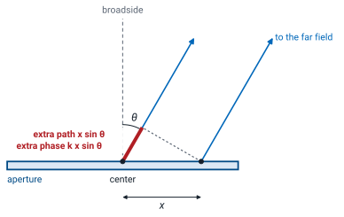
That integral is a Fourier transform: the aperture coordinate \(x\) is the variable, and the transform variable is the space frequency
\(S(\theta)\) is the Fourier transform of \(E_a(x)\), and the space frequency \(u\) is its transform variable.
The shape of \(\vert S\vert\) against \(u\) depends only on the shape of \(E_a\).
Working in \(u\) instead of \(\theta\) is what makes the results in this lesson reusable. The shape of \(\vert S\vert\) against \(u\) depends only on the shape of the illumination. The aperture’s size in wavelengths, \(L/\lambda\), sets how many degrees correspond to each unit of \(u\), and nothing else.
Angle Convention
Module 3 measures \(\theta\) from broadside, as every phased-array plot and PHASER readout does, so \(u\) carries \(\sin\theta\), not \(\cos\theta\).
This \(u\) is Lesson 6’s divided by \(\pi\): nulls fall at the integers and the first sidelobe at \(u = 1.430\).
Note
Module 1 wrote the line-source pattern in the polar angle measured from the wire axis. Module 3 measures \(\theta\) from broadside instead, which is what every phased-array plot and every PHASER readout uses, so the space frequency here carries \(\sin\theta\) rather than \(\cos\theta\). Lesson 16 makes that substitution explicit once; after that, broadside is \(\theta = 0\) everywhere in the module.
The symbol \(u\) also changes scale. Lesson 6 wrote the uniform line source as \(\sin u/u\) with \(u = (kL/2)\cos\theta\), so its nulls sat at \(u = \pi\) and its first sidelobe at \(u = 4.493\). The \(u\) here is Lesson 6’s \(u\) divided by \(\pi\), with \(\sin\theta\) in place of \(\cos\theta\), which puts the nulls at the integers and the first sidelobe at \(u = 1.430\). Lesson 14’s circular aperture keeps the \(\pi\), \(u = (\pi D/\lambda)\sin\theta\).
Key Point: Shape and Size
The shape of the illumination sets the sidelobe level and the beamwidth constant. The size of the aperture in wavelengths scales that beamwidth in angle and leaves the sidelobe level alone.
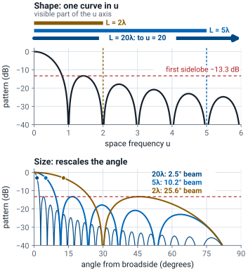
The far field is the Fourier transform of the aperture field, and every aperture and array design in this course sets both its shape and its size.
The figure shows both halves of that statement for a uniform aperture. Against \(u\) there is one pattern, and the aperture length only decides how much of it is visible: real angles reach \(\vert u\vert = L/\lambda\), so a \(2\lambda\) aperture sees out to \(u = 2\) and a \(20\lambda\) aperture out to \(u = 20\). Against \(\theta\) the same three apertures have beams \(25.6^\circ\), \(10.2^\circ\), and \(2.5^\circ\) wide, and every one of them puts its first sidelobe at \(-13.3\) dB.
Part 2: The Uniform Aperture
Start with the simplest illumination, a constant field \(E_a(x) = E_0\) across the whole opening. The integral is elementary:
With \(k = 2\pi/\lambda\) the argument is \(\tfrac{1}{2}kL\sin\theta = \pi u\), so the normalized field pattern of a uniform aperture is a sinc function of the space frequency:
That expression gives three numbers we will use throughout the module: the null positions, the beamwidth, and the first sidelobe level.
Nulls
\(\sin\pi u = 0\) at \(u = \pm 1, \pm 2, \dots\), so the first null is at \(\sin\theta = \lambda/L\).
An aperture shorter than \(\lambda\) has no null in real space, so it radiates broadly however we feed it.
\(\sin\pi u\) vanishes at \(u = \pm 1, \pm 2, \pm 3, \dots\), so the first null sits at \(\sin\theta = \lambda/L\). An aperture shorter than one wavelength has no null anywhere in real space, which is why a small aperture radiates broadly however we feed it.
Beamwidth
Solving
gives \(\pi u = 1.3916\), so the half-power points sit at \(u = \pm 0.4429\) and
The half-power points are at \(\sin\theta = \pm 0.4429\ \lambda/L\). The beamwidth spans both points, and for a beam a few degrees wide the sine is the angle in radians:
The small-angle step is good to within \(1\%\) for \(L \ge 2\lambda\). Lesson 6’s \(2\lambda\) line source gave \(25.6^\circ\) exactly against \(25.4^\circ\) from the approximation.
The half-power points sit at \(u = \pm 0.4429\).
Memorize \(0.886\): Lesson 20’s array beamwidth and every PHASER beamwidth prediction use it.
The \(0.886\) is worth memorizing. It is the constant behind the array beamwidth formula in Lesson 20 and behind every beamwidth prediction you will make on the PHASER.
First Sidelobe
The first sidelobe peaks at \(u = 1.430\), where \(\vert F\vert = 0.217\), or \(-13.3\) dB.
The level does not depend on \(L\). A longer aperture narrows the beam and leaves the sidelobe \(13.3\) dB down.
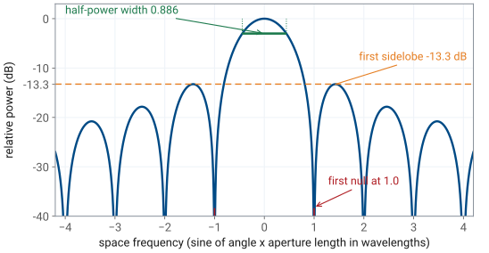
The first sidelobe peaks where the slope of \(\sin\pi u/\pi u\) is zero, which happens where \(\tan\pi u = \pi u\). The first root past the main lobe is \(u = 1.430\), where \(\vert F\vert = 0.217\), or \(-13.3\) dB. The first sidelobe level does not depend on \(L\). Making a uniform aperture longer narrows the beam and raises the gain, and it leaves the first sidelobe exactly \(13.3\) dB below the peak. The shape of the illumination sets the sidelobes, and the uniform shape fixes them at \(-13.3\) dB.
Worked Example: Beamwidth of a 10λ Aperture
At \(L = 10\lambda\): \(\theta_\text{HP} = 5.08^\circ\), first nulls at \(\pm 5.74^\circ\), first sidelobe at \(-13.3\) dB.
At \(10\) GHz that aperture is \(0.30\) m. At \(3\) GHz the same \(0.30\) m is \(3\lambda\), and the beam opens to \(16.9^\circ\).
Worked example — beamwidth of a 10-wavelength aperture
A uniformly illuminated aperture is \(L = 10\lambda\) long. Its half-power beamwidth is
its first nulls are at \(\sin\theta = 0.1\), or \(\theta = \pm 5.74^\circ\), and its first sidelobe is \(13.3\) dB down. At \(10\ \text{GHz}\) that aperture is \(0.30\ \text{m}\) long. At \(3\ \text{GHz}\) the same \(0.30\ \text{m}\) is only \(3\lambda\), and the beam opens to \(16.9^\circ\).
Rectangular Apertures
A rectangular aperture is no harder to analyze when the illumination separates, \(E_a(x,y) = E_x(x)E_y(y)\). The double integral factors, and the pattern in each principal plane is the line-source result for that dimension:
A tall narrow aperture makes a wide flat beam, and a wide short aperture makes a narrow tall one.
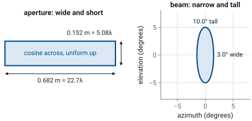
The figure draws the aperture that the X-band worked example below arrives at, \(0.682\) m by \(0.152\) m at \(10\) GHz. The \(0.682\) m dimension makes the \(3^\circ\) azimuth beam and the \(0.152\) m dimension the \(10^\circ\) elevation beam, so the beam’s footprint is the aperture turned \(90^\circ\).
The aperture efficiency of Part 3 factors the same way. Both integrals in its ratio split into an \(x\) integral times a \(y\) integral, so
where each factor is the line-source ratio for its own dimension.
Circular Apertures
A circular aperture of diameter \(D\) does not separate. Lesson 14 integrated Lesson 6’s radiation vector over a uniformly lit disk and found a Bessel function in place of the sinc:
Its half-power beamwidth and first sidelobe are
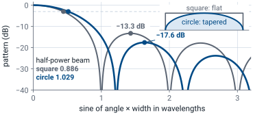
The half-power point is at \(u = 1.616\), and the same small-angle step as the line source gives
The circle is a little wider in beam than a square of the same width and a little better in sidelobes, and for the same reason: the edges of a circular aperture carry less of the total area than the edges of a rectangle, so the aperture is already mildly tapered as seen along any cut.
Part 3: Aperture Efficiency
Lesson 2 defined the effective aperture and the aperture efficiency \(\eta_\text{ap}\), the fraction of the physical area \(A\) that the antenna uses:
Lesson 13 derived \(\eta_\text{ap}\) from the aperture field for the horn, and Lesson 14 used the same ratio for the reflector. This part restates that result and evaluates it for the illuminations the rest of the module uses.
Aperture Efficiency as a Ratio
Lesson 13 derived the directivity of an aperture from its field:
The derivation compares two quantities. At \(\theta = 0\) every phase factor in the radiation integral is 1, so the boresight field is the coherent sum of the aperture field, \(\int_A E_a\ dS'\). The power leaving is the plane-wave power flowing through the opening. In Lesson 13’s notation,
and Lesson 2’s directivity is their ratio:
The chain gives directivity. Gain is \(G = \eta_\text{rad} D\) (Lesson 2), and the walls of a horn and the surface of a reflector dissipate so little that \(\eta_\text{rad} \approx 1\) (Lesson 13). For those antennas
The ratio is coherent gain over available gain. By the Cauchy-Schwarz inequality it never exceeds one, and it equals one only for constant amplitude and constant phase.
Read that ratio as coherent gain over available gain. The numerator grows with field that adds in phase; the denominator is the power the aperture had to radiate. By the Cauchy-Schwarz inequality the ratio never exceeds one, and it equals one only when \(E_a\) has constant amplitude and constant phase over the whole aperture. Uniform illumination is the most efficient illumination there is, and every departure from it — a taper, a phase error, a piece of aperture with nothing on it — lowers the efficiency.
Evaluated with the amplitude of \(E_a\) alone, the ratio is what Lesson 14 called the taper efficiency \(\eta_t\) (Lesson 13 wrote \(\eta_\text{taper}\)). The worked example and the taper table below give \(\eta_t\); an aperture with no other loss has \(\eta_\text{ap} = \eta_t\).
Worked Example: Efficiency of a Cosine Illumination
A horn’s cosine illumination delivers \(81\%\) of the gain its area could support, a \(0.9\) dB loss.
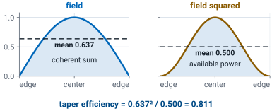
Worked example — efficiency of a cosine illumination
Take \(E_a(x) = \cos(\pi x/L)\) over \(-L/2 \le x \le L/2\), which is the illumination inside the mouth of a pyramidal horn in its broad dimension. Work in \(\xi = x/L\) so the aperture runs from \(-1/2\) to \(1/2\) and its length is \(1\):
The cosine-illuminated aperture delivers \(81\%\) of the gain its area could support, a loss of \(0.9\) dB. The same arithmetic gives \(0.75\) for a triangular illumination and \(2/3\) for \(\cos^2\).
Other Aperture-Efficiency Losses
\(\eta_t\) is one factor of \(\eta_\text{ap}\). Spillover, phase error, blockage, and cross-polarization multiply in.
Lesson 14’s reflector came to \(0.66\) with \(\eta_t = 0.85\); a horn comes to \(0.49\).
None of these losses is heat, so \(\eta_\text{ap}\) is not \(\eta_\text{rad}\).
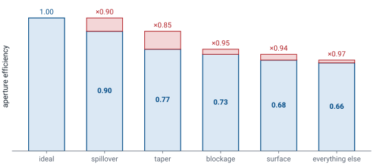
Two cautions on using \(\eta_\text{ap}\) in practice. First, the taper efficiency \(\eta_t\) is only one of its factors. A real reflector also loses to spillover past the rim (Lesson 14’s \(\eta_s\)), to phase error across the surface, to feed and strut blockage, and to cross-polarization, and \(\eta_\text{ap}\) as measured is the product of all of them. Lesson 14’s efficiency budget took an ordinary reflector from \(1.00\) to \(0.66\) that way, with a taper factor of only \(0.85\). A horn’s cosine taper alone gives \(0.81\), and Lesson 13 found the rest in the flare’s phase error: \(0.78 \times 0.77 \times 0.81 = 0.49\), which is why horns come in near \(0.5\). Second, \(\eta_\text{ap}\) is not radiation efficiency. \(\eta_\text{rad}\) accounts for power turned into heat; \(\eta_\text{ap}\) accounts for power that radiates but does not end up on boresight.
Key Point: Gain From Area
Area and wavelength set the ceiling, and the illumination decides how close the antenna comes to that ceiling. Use \(\eta_\text{ap} \approx 0.5\) for a horn and \(0.55\) to \(0.7\) for a good reflector when no better value is available.
For a low-loss aperture, \(\eta_\text{rad} \approx 1\) and gain equals directivity.
Part 4: Tapering and the Pattern
Tapering lets the illumination fall off toward the edges.
The uniform aperture’s sharp edge produces its \(-13.3\) dB sidelobes; a rounded edge lowers them.
The outer aperture then works below full strength, so the beam widens and the gain falls.
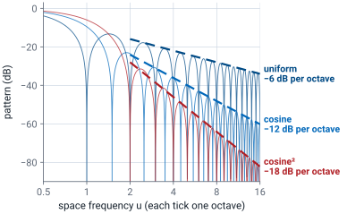
Tapering means letting the illumination fall off toward the edges of the aperture instead of stopping abruptly. The uniform aperture’s \(-13.3\) dB sidelobes come from the sharp edge: the transform of a function with a step in it decays slowly. Round the edge off and the sidelobes fall away much faster. The outer part of the aperture no longer works at full strength, so the aperture behaves as though it were shorter and less complete than it is, the beam widens, and the gain falls.
The far sidelobes show how much the edge matters. Each level of smoothness at the edge, first the illumination itself and then its slope, adds one power of \(u\) to the decay. The uniform illumination steps to zero, and its sidelobes fall as \(1/u\), or \(6\) dB per octave of \(u\). The cosine reaches zero continuously but with a slope there, and its sidelobes fall as \(1/u^2\), or \(12\) dB per octave. The \(\cos^2\) illumination arrives with zero slope as well, and its sidelobes fall as \(1/u^3\), or \(18\) dB per octave.
The Taper Trade
Four illuminations cover most of the ground, and their numbers are the ones this course uses everywhere:
Taper |
Sidelobe (\(\text{dB}\)) |
HPBW (\(\times\ \lambda/L\)) |
\(\eta_t\) |
\(\Delta G\) (\(\text{dB}\)) |
|---|---|---|---|---|
Uniform |
\(-13.3\) |
\(0.886\) |
\(1.00\) |
\(0\) |
Cosine |
\(-23\) |
\(1.19\) |
\(0.81\) |
\(-0.9\) |
Triangular |
\(-26.5\) |
\(1.28\) |
\(0.75\) |
\(-1.25\) |
Cosine\(^2\) |
\(-31.5\) |
\(1.44\) |
\(0.667\) |
\(-1.8\) |
The table reads as one continuous trade. Going from uniform to \(\cos^2\) lowers the first sidelobe by \(18\) dB, widens the beam by \(63\%\), and loses \(1.8\) dB of gain. There is no illumination that lowers sidelobes and narrows the beam at the same time. When a radar system needs low sidelobes to keep clutter and jamming out of the receiver, it accepts a wider beam or a larger aperture to get them.
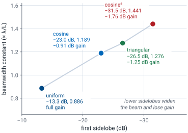
Illumination and Length
The widget below computes the pattern of each illumination directly from the aperture integral. Pick an illumination and watch three things: the sidelobe level and the half-power constant change together, while the aperture length slider moves the pattern in angle without touching either. Set the aperture to \(2\lambda\) and step through the illuminations to see the sidelobes leave visible space entirely, then set it to \(20\lambda\) and confirm that the first sidelobe of the uniform case is still exactly \(13.3\) dB down.
Four Illuminations and Their Patterns
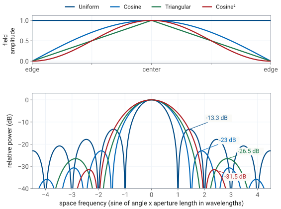
From uniform to \(\cos^2\), the first sidelobe drops \(18\) dB, the beam widens \(63\%\), and gain falls \(1.8\) dB.
No illumination lowers sidelobes and narrows the beam at once.
A low-sidelobe radar accepts a wider beam or a larger aperture.
Arrays as Sampled Apertures
An array samples the aperture, so the same ratio applies with sums over \(N\) element amplitudes.
The PHASER’s Hann preset is the \(\cos^2\) row sampled at the elements; Blackman tapers harder.
Note
An array is an aperture sampled at discrete points, so the same trade appears there with sums in place of integrals. The array version of the taper efficiency is the same \(\eta_t\) with sums,
which is the identical ratio of coherent to available gain evaluated over \(N\) element amplitudes. Lessons 24 and 25 use it on the PHASER. The Hann preset is the \(\cos^2\) row above sampled at the element positions, and the Blackman preset tapers harder than any row in the table.
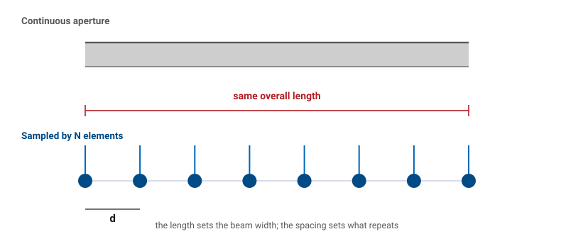
Part 5: Designing in Wavelengths
Every result so far depends on \(L/\lambda\) and \(A/\lambda^2\), never on \(L\) or \(A\) alone. That gives two scaling rules that let us size hardware before you know anything else:
Beamwidth scales as \(\lambda/L\). Double the aperture in wavelengths and the beam is half as wide.
Gain scales as \(A/\lambda^2\). Double both aperture dimensions in wavelengths and the gain rises by a factor of four, or \(6\) dB.
Both rules apply whether the aperture or the frequency changes. An antenna moved from \(10\ \text{GHz}\) to \(20\ \text{GHz}\) doubles its size in wavelengths, halves both beamwidths, and gains \(6\) dB, provided the feed keeps illuminating it the same way. That proviso matters on real hardware, since a feed horn’s illumination pattern is itself frequency-dependent, but the scaling is the right first estimate.
The figure follows the \(0.30\) m uniform aperture of the \(10\lambda\) worked example from \(1\) to \(20\) GHz. Its beamwidth falls as \(1/f\): the exact \(2\arcsin(0.4429\ \lambda/L)\) gives \(17.0^\circ\) at \(3\) GHz, where the small-angle \(50.8^\circ\ \lambda/L\) gives \(16.9^\circ\), and \(5.08^\circ\) at \(10\) GHz. A uniform \(0.30\) m square over the same band gains \(6\) dB per doubling of frequency, from \(20.5\) dBi at \(3\) GHz to \(31.0\) dBi at \(10\) GHz.
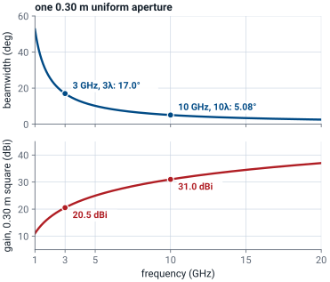
Worked Example: Sizing an X-Band Aperture
Specification at \(10\) GHz, \(\lambda = 0.03\ \text{m}\): \(3^\circ\) azimuth, \(10^\circ\) elevation, azimuth sidelobes below \(-20\) dB.
Cosine in azimuth: \(L_x = 0.682\ \text{m} = 22.7\lambda\).
Uniform in elevation: \(L_y = 0.152\ \text{m} = 5.08\lambda\).
Worked example — sizing an X-band aperture
Size a rectangular aperture at \(10\ \text{GHz}\) for a \(3^\circ\) beam in azimuth, a \(10^\circ\) beam in elevation, and azimuth sidelobes no higher than \(-20\) dB. At \(10\ \text{GHz}\), \(\lambda = 3\times10^8/10^{10} = 0.03\ \text{m}\).
Quantity |
Work |
Result |
|---|---|---|
Azimuth illumination |
uniform gives only \(-13.3\) dB; cosine gives \(-23\) dB |
cosine, constant \(1.19\) |
Azimuth length |
\(L_x = 1.19\lambda/\theta_\text{HP} = 1.19(0.03)/0.05236\) |
\(0.682\ \text{m} = 22.7\lambda\) |
Elevation length |
uniform is fine; \(L_y = 0.886(0.03)/0.1745\) |
\(0.152\ \text{m} = 5.08\lambda\) |
Aperture area |
\(A = 0.682 \times 0.152\) |
\(0.104\ \text{m}^2\) |
Aperture efficiency |
\(\eta_x\eta_y = 0.81 \times 1.00\) |
\(0.81\) |
Gain |
\(G = 0.81(4\pi)(0.104)/(0.03)^2 = 1176\) |
\(30.7\ \text{dBi}\) |
Largest dimension |
diagonal, \(\sqrt{0.682^2 + 0.152^2}\) |
\(0.699\ \text{m}\) |
Far-field distance |
\(2D^2/\lambda = 2(0.699)^2/0.03\) |
\(33\ \text{m}\) |
Lesson 5 defined \(D\) in \(2D^2/\lambda\) as the antenna’s largest dimension, which for a rectangle is its diagonal.
Worked Example: Checking the X-Band Design
The pencil-beam bound is \(31.4\) dBi; the practical range is \(29.4\) to \(30.3\) dBi.
\(30.7\) dBi sits just above that range because the only loss is the known taper.
The \(33\) m far-field distance rules out an ordinary room.
Worked example — sizing an X-band aperture, checking the design
Check the gain against the pencil-beam estimate from Lesson 2: \(41{,}253/(3 \times 10) = 1375\), or \(31.4\ \text{dBi}\), is the lossless geometric bound, and the practical constant of \(26{,}000\) to \(32{,}400\) gives \(29.4\) to \(30.3\) dBi. The computed \(30.7\) dBi sits just above that band, which is the right place for an aperture whose only loss is a known amplitude taper. A real antenna with spillover and a feed in front of it would land inside it.
The design has two further consequences. The \(3^\circ\) azimuth requirement is what made this antenna \(0.68\ \text{m}\) wide, and the sidelobe requirement made it \(34\%\) wider than a uniform aperture with the same beamwidth would have been. Also, a \(33\ \text{m}\) far-field distance means this antenna cannot be pattern-tested in any ordinary room, which is the compact-range and near-field-scanning problem from Lesson 9.
Gain as the Design Output
The sidelobe specification chooses the illumination, the illumination fixes the beamwidth constant, and the beamwidth fixes the length. The gain comes out last: it is a design output, not a design input.

Notice how the requirements mapped onto the aperture. The sidelobe specification chose the illumination, the illumination fixed the beamwidth constant, the beamwidth specification then fixed the length, and only after all of that did the gain come out. For an aperture antenna, gain follows from the design; it is not a design input.
Summary: The Aperture-to-Pattern Relationship
Symbol / idea |
What it is |
Number to remember |
|---|---|---|
\(E_a(x)\) |
aperture distribution, the field across the opening |
the pattern depends on nothing else |
\(u = (L/\lambda)\sin\theta\) |
space frequency; pattern \(=\) Fourier transform of \(E_a\) |
shape sets \(u\)-pattern, size sets the angle scale |
\(\vert F\vert = \vert\sin\pi u/\pi u\vert\) |
uniform line source or aperture |
nulls at integer \(u\) |
Summary: Beamwidth and Sidelobes
Symbol / idea |
What it is |
Number to remember |
|---|---|---|
\(\theta_\text{HP}\) |
half-power beamwidth of a uniform aperture |
\(0.886\ \lambda/L\), or \(50.8^\circ\ \lambda/L\) |
first sidelobe |
uniform aperture, any length |
\(-13.3\) dB; circular uniform, \(-17.6\) dB and \(1.029\ \lambda/D\) |
Summary: Efficiency, Gain, and the Trade
Symbol / idea |
What it is |
Number to remember |
|---|---|---|
\(\eta_\text{ap}\), \(\eta_t\) |
coherent gain over available gain; \(\eta_t\) is the amplitude-only part |
\(\eta_t = 1.00\) / \(0.81\) / \(0.75\) / \(0.667\) for uniform / cos / triangular / cos\(^2\) |
\(G = \eta_\text{ap}\ 4\pi A/\lambda^2\) |
gain of a low-loss aperture antenna (\(\eta_\text{rad} \approx 1\)) |
horn \(\approx 0.5\), good reflector \(0.55\) to \(0.7\) |
taper trade |
lower sidelobes widen the beam and reduce gain |
\(-13.3 \to -31.5\) dB widens the beam \(63\%\) and loses \(1.8\) dB |
Practice
Looking Ahead to Lesson 16
Lesson 16 replaces the integral with a sum over \(N\) elements, and the space factor becomes the array factor.
The \(0.886\) constant and the taper trade carry over to element weights.
Know \(0.886\ \lambda/L\), \(-13.3\) dB, and \(\eta_\text{ap}\) by then.
Lesson 16 samples the aperture. Replace the continuous illumination with \(N\) discrete elements spaced \(d\) apart, replace the integral with a sum, and the space factor becomes the array factor — the same Fourier relationship with the same beamwidth constant and the same sidelobe trade, now expressed in element weights you can change electronically. Pattern multiplication follows immediately: the full pattern is the element factor times the array factor. Everything in this lesson survives that step, so we need these numbers in hand before Lesson 16.
The Fourier view carries the rest of the module. Steering the beam in Lesson 18 is a linear phase ramp across the aperture, which shifts the transform. Sidelobe control in Lesson 24 is the taper table applied to element amplitudes. Grating lobes in Lesson 26 are what happens when the sampling is too coarse. Before Lesson 16, be able to state the uniform-aperture beamwidth constant, its first sidelobe level, and the definition of aperture efficiency without looking them up. The midterm pattern-measurement project is due 2 Oct, and the beamwidth and sidelobe numbers you predict for it come from this lesson.